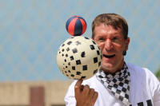

Communicative Language Teaching (CLT)

You may like to refresh your memory concerning the history and development of English Language Teaching before we go on (new tab) because that will give you the background.
To recap briefly what was said at the end of that guide, the following led to a rise in the 1960s and 1970s of a new approach to language teaching:
- criticisms of structural linguistics (and the growth of descriptive rather than prescriptive grammars)
- criticisms of behaviourist theories of learning (and an emphasis on cognition)
- a recognition that language is primarily a means to communicate (and not only a set of grammatical rules and lexis)
- a recognition that learners need to know how to deploy the language they are learning in order to communicate
That approach is usually called Communicative Language Teaching or CLT. You may also find it called Communicative Language Learning or CLL and even Communicative Language Teaching and Learning (CLTL).
 |
The roots of CLT |
The roots of CLT run deeper than many realise. As long ago as the 17th century people were producing guides to learning languages which expressly focused on communicative acts such as recommending, suggesting and informing. For a little more on that, see the guide to the history and development of ELT.
The rise of a range of direct-method approaches was also spurred to some extent by the recognition that people need language for a purpose, not just as an intellectual exercise which would, eventually, allow access to literature and the target language culture. For example, the originators of the Oral or Situational Approach to language teaching asserted that:
The language a person originates ... is always expressed for a
purpose.
(Frisby and Halliday in Richards and
Rogers (2014: 48))
and that purpose, it can be argued, is to use language to get things done.
The roots of CLT go further back than the 1930s, however, and have been variously traced to Comenius (a 17th century Polish philosopher and educationalist) and to other 17th century endeavours to teach Europe's increasingly mobile population (or, at least, its elites) to operate in another language. Around that time, too, Latin was beginning to lose its preeminence as the language of scholars and some, notably Isaac Newton, wrote, or were beginning to write, in English. Newton's Principia was written in Latin but his hugely successful Opticks was written in plain English, only translated into Latin two years after the 1704 publication.
By the 19th century, many approaches to teaching language centred around its communicative functions, not just its grammar, so, for example, François Gouin (1831-1896) developed a teaching methodology based on sequentially logical descriptions of everyday routines and others, too, were experimenting with what today would be seen as communicative approaches.
In Britain prior to 1800, too, it was reasonably common for wealthier families to employ refugee Huguenots as tutors to their children and from them many children learned to be quite fluent in French, at the time the general lingua franca (for that is what the Latin means) of Europe and the language of diplomacy and science. Such tutors were usually not in any sense, of course, trained teachers let alone trained language teachers and their pupils learned the language simply by talking. In 1693, John Locke, the eminent British philosopher, put it this way:
Men learn languages for the ordinary
intercourse of Society and Communication of thoughts in common Life
without any design in their use of them. And for this purpose,
the Original way of Learning a Language by Conversation, not only
serves well enough, but is to be prefer'd as the most Expedite,
Proper and Natural
(Cited in Howatt, 1984:193)
Underlying all these early approaches to language teaching are three ideas which still inform a communicative approach to language learning and teaching:
- Learners need someone to communicate with whose mastery of the target language is better than theirs
- Learners need something to talk and write about that concerns them personally
- Learners have a motivation to learn which stems from a desire to understand and be understood
Nevertheless, It is arguable that the aim of previous mainstream approaches to teaching
English or any other language was linguistic competence: the ability to manipulate the
grammatical and lexical system of the target language to construct
meaning.
The aim of CLT is communicative competence, a term coined by Dell Hymes
around 1970 to distinguish between formal ability and knowledge of the
structures of language and a practical, social ability to use it as a
medium of communication.
 |
Defining communicative competence |
Firstly, of course, we need to define what we mean by communicative
competence.
Briefly, it is the ability to:
- Apply grammar rules of a language in
order to form and recognise grammatically correct sentences
- this is what is normally understood by structural or grammatical competence, the ability to produce a structurally accurate sentence that is comprehensible.
- Know where and when to use these sentences to whom
- This includes four further competences:
- Linguistic competence:
knowledge of the grammar alone is not enough.
Added to structural competence we need lexical competence (and that will include a knowledge of idiomaticity, collocation, spelling and so on) in the target language.
We also need phonological competence which includes the ability to produce and understand the sounds of the language along with issues of stress, intonation and connected speech phenomena. - Sociolinguistic competence: knowledge of the rules of speaking – speech events, illocutionary force, address forms, turn-taking conventions etc.
- Discourse competence:
knowing how to use and respond to different types of speech acts –
requests, apologies etc. This is sometimes called
functional competence and involves things like adjacency pairs
(apologising and forgiving, asking and refusing, demanding and
complying etc.).
There is a guide, linked below, to adjacency pairs and how and why they are important in CLT. - Strategic competence: knowing how to use language appropriately – when is it right to perform certain speech acts. This is sometimes called cultural competence.
- Linguistic competence:
knowledge of the grammar alone is not enough.
- This includes four further competences:
Two important points:
- Communicative competence includes linguistic competence.
- Communicative competence is not the same as oral ability but includes competence in writing, reading and listening, too.
If you prefer a diagram:

It's actually quite difficult these days to find a teacher of English who doesn't claim to teach communicatively. CLT has become the dominant methodological approach and it is what underlies many of the criteria which teacher training courses use to assess people. It's attractive, simple to understand and intuitively 'correct'. It is, however, worth taking a closer look at some of the claims.
 |
Competence vs. performance |
This distinction is usually credited to Chomsky but it is allied to a
much earlier distinction described by Ferdinand de Saussure (1857 –
1913) a Swiss linguist (sometimes referred to
as the father of modern linguistics) and called langue vs.
parole.
In both cases, the distinction is between:
- the speaker's abstract knowledge of the systems of the language (langue or competence)
- This refers to a learner's ability to articulate the
rules of the language. For example,
I know that the past tense of most verbs in English is formed by adding -d or -ed to the base form of the verb
I know that the possessive pronoun in French varies with the gender of the following noun - the speaker's actual use of the language (parole or performance)
- This refers to the learner's ability to apply the rules and be
able to say, write or understand the value of, e.g.:
She watched the game
Marie est ma soeur
(In fact, de Saussure's distinction relates to the speech community as a whole, whereas Chomsky is referring to individuals.)
It is clear that CLT focuses on the learners' performance in the language but it should not be forgotten that this performance is based on competence.
 |
Speech acts |
A speech act is an utterance as an action, a way of getting
something done in any language. In discourse analysis, speech
acts may be subdivided into moves. A move is
a communicative use of language which is often smaller than an
utterance but may be the utterance itself. For example:
Would you like some more tea?
is a complete utterance containing just one move, offering.
However,
That's true and I have often said so myself
contains two moves, the confirmation (That's true) and
the information (I have often said so myself).
In addition to coining the
term communicative competence, Hymes spent a good deal of his career
establishing the nature of communicative speech acts and what they
depend on for their realisation. The work is voluminous and
sometimes complex but he usefully gave us a short-cut acronym –
S-P-E-A-K-I-N-G.
It works like this:
- S is for Setting and Scene

- This refers to where and when a speech act is taking place
and the physical environment in which it occurs.
For example, the way something is said will be very strongly influenced by where it is said. Language used in the home will differ markedly from that used in a school or a public place where others may be listening in.
Equally, the language use at a festive occasion will be very different from that used at a more sombre and serious event. - P is for Participants

- This refers to the speaker and the audience. There are
four participants by most analyses: addressor, speaker, hearer
and addressee.
For example, if we take:
John asked Mary to tell Peter to let Fred know
then we have:
John: the addressor and first speaker
Mary: the hearer and second speaker (note that she is not the addressee)
Peter: the second hearer and third speaker (also not the addressee)
Fred: the third hearer and the addressee
Not all interactions will contain all four roles discretely, of course, because in a situation where only two people are speaking, they will both from time to time take on the role of addressor and speaker and addressee and hearer. It is, however, noticeable that we do frequently say things which are not intended to be addressed to the hearer but to be passed on to, or overheard by, the real addressee.
We often send messages to more than one addressee, less frequently are we addressed by more than one addressor.
Who the people are, their roles and relative power will constrain quite markedly what language is used. We will not address a police officer in the same way that we might address a child or life partner in the same way we would address a schoolteacher.
What is concerned here is what in other, functional, analyses is called the tenor of discourse. For more on that, see the guide to genre, linked at the end. - E is for Ends

- This refers to the purposes of the interaction: the intended
outcomes.
We may speak to inform, to entertain, to explain, to teach, to create a bond, to request information and a host of other functions. How we phrase what we say will depend to a large extent on what we intend to achieve.
This is sometimes referred to as the field of discourse but that concept is somewhat wider in scope. See the guide to genre, linked below, for more.
The language we use, for example, to suggest a reproach will be very obviously different from the language we use to congratulate or request help. Compare, for example:
Could you help me?
You could help me
You could have helped me - A is for Act sequencing

- Speech acts do not, of course, occur randomly. For
example:
I want you to help me with this
is an unlikely beginning to an exchange as is
What do you want to do?
a very unlikely closing to an exchange.
Speech acts occur in logical orders but that is not to say that they are predictable. For example:
Have you got a minute?
will usually be perceived as a precursor to some kind of request and may be followed by:
Sure, how can I help?
but may also be followed by:
I'm a bit busy right now. Can it wait?
or
What is it now?
and the initiator of this exchange needs to be able to react sensibly and appropriately to whatever response is received.
Speech acts may follow rules associated with adjacency pairings, so, for example, a suggestion such as:
You should take a break
will conventionally be followed by something like:
Yes, you're right. I think I will
or
I can't right now
or even:
Not possible.
but will not usually be followed by something like:
May I ask a question?
because suggestions do not normally combine closely with requests for permission.
There is a good deal more on this in the guide to adjacency pairs such as complaining / making excuses, informing / acknowledging, inviting / accepting / declining and so on.
The analysis of turn taking, too, is concerned with speech act sequencing and part of the ability to speak in a language involves knowing how, when and with what effect to take a turn, hold a turn or give up a turn.
There is a separate guide to turn-taking skills, linked in the list of related guides at the end. - K is for Key

- Our speech contains signals of the manner, tone and spirit
in which we want to be heard. Compare for example:
Three horses came into a bar ...
Once upon a time, there was a beautiful princess ...
I'm late I know but I've had an awful morning because ...
and each of these is the prequel to a narrative of some kind but the tone of each will be very different and that is signalled by our choice of language (a joke, a fairy tale and an excuse respectively). - I is for Instrumentalities

- This refers to the forms and styles of speech that we use.
We may, for example, be speaking casually to a close friend with whom we share much and will not be careful to avoid slang, dialect and colloquialisms. We will also, probably, draw on shortcuts such as:
She's a bit like your sister
to avoid long descriptions.
However, if we are concerned because of other factors to maintain some distance and an air of authority, we may select our words very carefully and be very concerned to speak accurately in a standard dialect with very little colloquialism and idiomatic language use.
Equally, if we are operating in a particular register (such as professional meetings or fields of concern), we will be at pains to use precise terminology and conventional language for that field of discourse. - N is for Norms

- This refers to the cultural rules governing discourse.
In a familiar, informal setting, we may feel free to interrupt a speaker and grab a turn. In a formal business meeting or a church service, for example, interruption will not be welcome.
We may, too, opt to collaborate with the speaker in some settings (such as the recounting of an anecdote) to help the story along. In other settings and with other participants, the cultural rules may prevent that. - G is for Genre
- All cultures have generic conventions whether in speech or
writing but they vary.
What may be the usual way of structuring a narrative in one culture (e.g., orientation, series of events with a complications, resolution of the complication and personal evaluation) may not be appropriate in another culture where the evaluation may come first and the story serve to illustrate its value.
The argument follows that in order to present and practise language successfully in terms of its communicative force, we need to consider SPEAKING at all times to make sure that we are giving learners the opportunity to understand the constraints and possibilities that they need to be aware of for successful language use (rather than just language usage).
 |
Strong vs. weak forms of CLT |
Almost from the outset, two forms of CLT emerged:
- Strong form
- You can only learn a language through the effort to communicate so:
No teaching of language forms – no pronunciation teaching, no vocabulary teaching, and definitely no grammar teaching.
The classroom is, therefore, the place where people struggle to communicate, get help and guidance and learn through trying. - Weak form
- The
goal of language teaching is communicative competence but:
All types of teaching are appropriate providing the goal is maintained.
It is here, of course, that we can see that CLT is not necessarily a radical paradigm shift away from approaches which relied on drilling, habit formation and so on but which incorporated the methodology into an endeavour with a new aim.
It's also quite hard to find someone who consistently advocates the strong form these days. So what follows applies to the weak form of CLT.
 |
Rules of use |
You will, of course, recall the much-cited statement:
There are rules of use without which
the rules of grammar would be useless.
(Hymes (1971))
The key concept here is the illocutionary force of any utterance, i.e., what the speaker intends to be understood and what the hearer understands. This is sometimes referred to as a statement's communicative value rather than its significance, following Widdowson (1978).
For example, if you reply to:
I think we should eat soon
with
I'll order a takeaway, shall I?
then you have demonstrated some communicative value as well as
significance. The response is appropriate and relevant so this is
language use.
If, however, you reply to:
I think we should eat soon
with
Alaska is the largest US state
then you have demonstrated only the statement's significance (we know
what is meant but it has no communicative value), so this is merely
language usage.
 |
Three forces |
The division here draws on the work of John Austin (1911 – 1960) a British philosopher who developed the ideas.
There are, in fact, three forces at work when language is used to communicate. To explain, we'll use the example of someone saying
It's 8 o'clock.
Before we go on, think for a moment about what that simple statement
could actually mean.
Click here when you have thought of three possibilities.
- Locutionary force
- The 'basic' meaning of what you say.
In our example, this would correspond to the meaning that
The time is 20:00 or 08:00.
No more, no less. - Illocutionary force
- The meaning intended or the meaning perceived.
In our example, the statement could mean:
It's time to go
It's time to eat
I'm hungry
You're late. Hurry up!
No need to rush
Turn on the television
Slow down a bit
or any of the possible meanings you identified.
This is the key concept. What an utterance means is dependent on the speaker's intention, the shared knowledge and the setting, not to mention paralinguistic features such as intonation and facial expression. It also depends, of course, on the hearer's perception of a situation. That may differ from the speaker's understanding.
Austin renamed speech acts as illocutionary acts to make this distinction clear. - Perlocutionary force
- This refers to the fact that an utterance like this may actually produce a reaction in the hearer. If, in this example, the hearer immediately accelerates a car or stands up and gets her coat or turns on the television etc., then the perlocutionary force of the statement has been demonstrated.
A simpler and nowadays more common division is to consider only
the propositional content of what someone says or writes (i.e., the
messages and information it contains) and the speech act's
illocutionary force (i.e., what it is intended to do in the
language).
For example, if you are having trouble with a computer, I might say:
My friend, Pete, is good with hardware
and the proposition is a) I have a friend, b) the friend is called
Pete and c) he is good with computer hardware. The
illocutionary force of the message may, however, be different and
what I say is meant as an offer to telephone Pete and ask if he can
help.
 |
Differences between function-based and form-based approaches |
The most obvious example of a form-based approach is audiolingualism.
If you have followed the guide to the history and development of ELT,
you'll know that it is an approach based on a behaviourist theory of
language learning and a structural linguistics theory of language
itself.
Can you fill the gaps
in the table? Click on it when you have / want an answer.

 |
Functions: what language does |
There is a list of nearly 70 functions in
the pre-service guide to functions which you may like to consult
(new tab).
The overarching categories (which often overlap) are:
- The descriptive function: giving and understanding factual
information. For example:
Can you tell me where the station is?
It's getting late
I'm taking the train home
I can't help you
etc. - The expressive function: relaying and understanding of
information about the speaker's feelings, preferences and ideas.
For example:
I'm not feeling well
I really don't like that man
I am not even going to try
etc. - The social function: establishing and maintaining social
relationships, especially roles and power structures. For
example:
Can I help you, madam?
Anything else?
Good morning officer. How can I help you?
These three categories, variously expressed and variously redefined in the literature constitute the foundations of the methodology's theory of language.
A theory of learning |
It has long been recognised that CLT has a well-worked-out theory of
language to which, in particular, Hymes, Austin, Seale and others
contributed greatly. See above.
What is less certain is whether the methodology has a theory of
learning which is equally robust and detailed as it must if it is to
qualify as a methodology in the strict sense of the word as it is
used in our profession.
Those who take a weak approach to the methodology are on sounder
footings here because they can draw on a range of learning theories
and hypotheses to explain how form can be learned and competence acquired. They
can select from (and, to some extent, mix and match) any of the
theories of second-language acquisition which have been propounded
at various times. These will include all those explained and
exemplified in the guide to second-language acquisition (to which
you are referred for more detail).
Most of the theories drawn on in CLT will be cognitive and many will
centre around active construction of grammar theory and
connectivism, in particular, but practitioners will also use
techniques which reflect imitation theory and even behaviourist
learning theory at times.
Those who take a stronger line have a more impoverished set of theories to draw on and many resort to proposing motivational theories. The suggestion is that growing real communicative ability is a powerful motivational factor and seeing the communicative usefulness of what one is learning to do is another.
Another theoretical lifeline draws on social constructivist theories
which state that learning is constructed by the learners. This
is usually contrasted in educational theory with what is labelled as
a transmission model in which knowledge is handed down from above.
The criticism of that is, naturally, that social constructivists are
setting up an unrealistic 'traditional' model in order to suggest
how social constructivism is superior.
It is, moreover, asserted that learning is primarily a social
activity. This means that knowledge and skills are not
acquired by individuals operating alone but only through interaction
with others.
This makes the theory a good fit with communicative classroom
approaches which forefront real (or even simulated) communicative tasks and emphasise
interaction with peers and others.
For criticisms, see the guide to second-language acquisition
theories.
A second string to the theoretical bow is drawn from theories of
first-language acquisition and is closely related to social
constructivism: social interactionist theories.
This cluster of theories seeks to explain how it is that children
acquire not only the ability to use language accurately but also to
use it in socially appropriate ways. A good deal of attention
in this theory is on what is called child-directed speech.
Such speech tends to be delivered with excessive intonation range
and pitch and to be simplified and repeated for comprehension.
From it, the child learns to decode its meaning before going on to
be able to comprehend and produce more complex and appropriate
adult-to-adult language.
If we substitute child-directed speech for learner-directed speech,
we have a good theory about how learning happens in a communicative
classroom in which models of communication are simplified at first
with explicit direction to noticing the social environment of
language as well as the intentions of the speakers but become
progressively more complex and demanding as communicative competence
grows.
Classroom implications |
This is not the place to present an entire training course in communicative methodology but there are some obvious implications for the classroom. Before going on, please consider what some of these implications might be. To help that process, here are some categories to work from:
- How do we teach form in CLT?
- What are the implications for context?
- How does learning happen?
- What sort of input do we provide? What kinds of materials and texts?
- What do the learners do with input materials?
- What sorts of activities do we use?
- How do we give feedback?
- How do we interact with our learners?
When you have made some notes in answer to those questions, click here for a discussion.
- Form must serve meaning

- The strong form of CLT, as we saw above, suggests no teaching of language forms – no pronunciation teaching, no
vocabulary teaching, and definitely no grammar teaching. The
weak form asserts that all types of teaching are appropriate
providing the communicative goal is maintained.
Either way, there is a clear assumption in CLT that form should be taught in order for people to be able to communicate. It is not the aim of teaching; it is a means to an end. In other words use (the actually deployment of language for a purpose) is prioritised over usage (the manipulation of structure, phonology and lexis).
How form is taught, whether inductively (through the use of example) or deductively (through the provision of explicit rules) is a matter of some debate but there is clear evidence that providing adult learners at least with grammatical rules does contribute to their learning success.
Much nonsense is spoken about taking either an inductive or a deductive approach to learning. This is not an either-or distinction. Even if one starts with a purely inductive approach in the classroom, the aim has to be for the learners to hypothesise a rule (preferably the right one) and then apply it to further examples of the target language. The second procedure is, of course, purely deductive. There is little point in putting learners to the trouble of constructing a rule from exemplification if they are not then encouraged to apply it. - Language must be set in its social context
- It is not possible to enhance our learners' sociolinguistic,
discourse or strategic competence if, when practice is the focus of
the teaching, the learners don't know why they are using the
language, when, where and to whom. That means giving them the
data.
The data are covered above in the consideration of Hymes' set of rules concerning S-P-E-A-K-I-N-G. - Learning must happen by doing

- This is conceptually allied to the theory underlying task-based
methodologies. It means that we should set tasks which as
nearly as possible simulate real-world situations and give our
learners the opportunity to practise their language skills in
meaningful ways.
It is a fundamental tenet of Communicative Language Teaching and Learning that learning occurs in the effort to communicate something meaningful. - Input must be rich and realistic

- This underlies CLT's insistence on using authentic materials and authentic settings. When we acquire our first language we are exposed to rich, ungraded language input – structural patterns, lexical chunks, phrases and idioms etc. which we can store and access on demand. There is a real challenge here because no classroom can simulate real life but the implication is clear. Accordingly, CLT practitioners need to take advantage of techniques and technologies which allow the importation of real-life language into the classroom: video, internet, 'real' people etc.
- We must maximise the opportunity to use the target
language

- The use, solely, of the target language in instruction is not new but it is a guiding principle of CLT. Although many will allow judicious use of the learners' first languages because it is a useful shortcut to meaning, the ethos of CLT is that the opportunities to hear, read, write and speak in the target language should be maximised.
- Input must be meaningful

- Not only should learners' output be set in meaningful contexts and produced for real reasons, so must the input be. This means, among other things, that teacher talk should be personalised and contextualised and written materials should be set in a social context and be seen to be performing a real communicative role (rather than being a vehicle for language study).
- Input must be comprehensible

- In order to be meaningful, of course, the language input must be comprehensible and clear context and an understanding of the speaker's or writer's intentions will help to make it so. This string of the approach has been emphasised by Krashen, among others, with the focus being on comprehensible input which is pitched just above the learners' current level of mastery: Input + 1 is often the shorthand way of denoting this.
- Output must be elaborated

- We can go a long way towards helping our learners improve their communicative competence by using elaborative routines such as confirmation checks (So what you are saying is ...), calls for expansion (Can you explain why that's important?) etc. In other words, it is never enough to be only comprehensible. Learners need to be pushed to learn to say what they mean with an ever-increasing level of sophistication and precision.
- Output must be personalised

- For example, in a structure-based approach, the response from a
learner to the stimulus
What sort of holidays do you like?
of
I like beach holidays
would be appropriate given the teacher's whispered prompt of beach.
In a CLT approach, the statement should be true for that learner, making the language meaningful to the individual. Equally, of course, learners need to respond to language input such as reading or listening texts in a personal way as well as using the content as a language resource or a text for skills practice. - Learning must be collaborative

- The obvious reason for using pairs and groups to tackle tasks is
the enhanced opportunities such procedures provide for real
negotiation of meaning and communication. Activities which
promote collaborative learning include information-gap exercises,
group problem-solving tasks, planning tasks, story-telling tasks and
many more.
The other obvious reason is that pair- and group-work activities contribute to maximising the opportunities for the learners to do the talking. In whole-class, plenary settings, usually only one person speaks at a time. - Feedback must be constructive

- Error is seen as a natural product of language learning in CLT
and needs to be dealt with on two levels:
- errors in form which must not be corrected in a way that interferes with the learners' communicative efforts
- errors in communicative success (which can include form, style and appropriacy) which must be highlighted and corrected (at some point).
- We must take account of affective factors

- Active language performance is a major goal of CLT but with this demand comes a danger of learners feeling stressed or inadequate to the task. This is particular noticeable at lower levels and with learners whose culture emphasises maintaining face and not appearing silly in public (i.e., most of us). We need to create a safe environment in which to take risks with the language.
 |
Criticisms of CLT |
We should not leave this guide without considering some of
criticisms that have been levelled at CLT. Because CLT has
become so dominant a methodology, criticisms of it are less often
heard. Indeed, most teacher training programmes take it as a
given that communicative approaches are central to best classroom
practice and do not consider whether they are actually effective.
Here's a citation to that effect:
In the 21st century, it is not necessary to
defend the premise that learning a foreign language should be based
on a communicative approach which prioritizes meaning over the form
in which this meaning is communicated.
Irún-Chavarria, 2005: 20,
cited in Swan, n.d.)
There are those who would suggest that this is a premise that most certainly does need defending because as it stands, it is simply an assertion and admonition with very little evidence to support it. We are all free to state what we believe should be done but to be taken seriously in the profession, we need to go on to argue persuasively why that should be the case.
Criticisms of CLT fall into a number of categories:
- Inductive learning

While CLT does not have, as we noted above, a well-thought-through theory of how language is learned, there is a thread which seems to state that given enough opportunity to see, hear and use language in a natural context, the learners will be able to construct an internal grammar which explains the forms.
This may be the case with English which happens to have a quite simple morphology.
For example, in English there is only one inflexion on the verb in the present simple tense to show person (the -es/-s ending) and none at all in the past or future forms. Past forms of all verbs are signalled by a simple ending change (the regular -ed/-d ending) or by internal changes to the verb. Nor does English have a recognised case structure affecting the forms of adjectives, nouns and articles in particular.
Other, more highly inflected languages are very different and the complications are manifold. Trying to figure out inductively how to use French verbs, German articles and Finnish cases would be virtually impossible.
CLT may, therefore, arguably be appropriate for a morphologically shallow language like English but is very unlikely to be effective in helping learners to acquire the forms of many other languages. - Cultural centrism
Anglophone cultures are strongly individualistic and have demonstrably low levels of power distance between individuals. They also score highly on the level of uncertainty that people are willing to tolerate.
These characteristics are self-evidently useful in a classroom in which the effort to communicate, however inaccurate and clumsy the language use is, is seen as a learning opportunity.
People from other cultures in which it is not customary to take public risks, where the output of the group is more important that that of the individuals in it and where people are intolerant of uncertainty and prefer to have reliable rules for behaviour will not be helped by an approach which conflicts with their cultural conventions.
(For a bit more on culture, see the guide, linked below.) - Teacher ignorance or intolerance of structure
Many teachers who employ a communicative approach, or at least claim to, are native speakers of the language who have not had the opportunity to engage with its formal characteristics. In other words, they don't feel at home with grammar.
For them, a communicative approach is a bonus because they are relieved of the need to learn the grammar of the language properly and can simply focus on its use.
Non-native teachers of English, on the other hand, have learned the language, often to a very high level of competence, and know from both personal experience and theory that a knowledge of the formal aspects of grammar, lexis and pronunciation is a prerequisite for the ability to communicate successfully, part of it, in fact.
The lazy native teacher has no such motivation and may use a communicative approach merely as a way to avoid difficult ideas. - Indifference to pattern

The image here actually does not contain a pattern that repeats (the definition of a pattern, of course) but if you look at it long enough, you may think that you can discern a pattern. That is what human brains do; we are active pattern seekers.
There is an argument that we should teach function not structure because that's the communicative, and, therefore best, way to teach.
The problem with the teaching of functions is that it quickly degenerates into a phrase-book approach to teaching anything.
Then we get to the stage at which a learner may be told that, for example:
I'm sorry
Please forgive me
I regret that
Excuse me
and so on are all ways to perform the function of apologising (and they are, of course, although they vary in intention and style).
Unfortunately, however, learning those four simple phrases and clauses tells the learner nothing which is of any further use and it is not possible for any learner to generate, for example:
I apologise
from any of them or even from a combination of them because there is no overt pattern to emulate and manipulate.
On the other hand, teaching that:
Forgive me, please
and
Excuse me, please
are transitive verbs in the imperative and the structure is simply the base form of the verb followed by a direct object (hence me not I) which is softened by the use of please, does allow any learner to generate:
Help me, please
Tell me, please
Show me, please
and thousands of other perfectly correct imperative-form requests which can perform multiple functions. The learner then has to supply the correct structure (not too hard) and know the meaning of the lexis. That's all.
The reason is simple: functional language abjures a focus on pattern but structural considerations insist on it. - Focus on skills

A focus on language as a communication rather than language as a system leads to an overdependence on skills work in the classroom. Most adult learners already have high levels of language skills in their first language(s) and neither need nor want to be told about how to read, write, listen or speak. What they want is the ability to do so in another language and for that they need to know the structural and phonological features which will help.
In other words, critics might say, they need skills practice, not skills teaching. - Focus on process

An unspoken (and very rarely written) assumption in CLT is that the very act of, say, trying to make sense of a text whether written or spoken or of constructing a bit of communicative writing or spoken interaction is in and of itself a good learning endeavour. What is lost sight of is whether the outcome, i.e., the product, is of any use in furthering learners' abilities.
Teachers within a communicative approach, however conceived, may feel the process is important but what learners crave (and have often paid for) is the product.
In other words, while it asserted (see above) that learning happens through the effort to communicate meaningfully, that is not a proven. It may be the case that communication aids language acquisition but whether it also aids language learning is a different matter. - Do-it-yourself materials

The assumption that the syllabus should be constructed around the needs, interests and wishes of the learners and be negotiated with them is a common one in CLT practice. So, in an effort to appear imaginative and innovative, many teachers within a communicative tradition will endeavour to construct materials which appeal to the current communicative needs as they see them of the learners in their charge. While it is laudable to try to fit materials to learners in this way, there are obvious dangers.
The construction of a course in language is a vast undertaking, often requiring highly skilled practitioners with access to large databases concerning the frequency and coverage of all sorts of items. To hope to replace that with materials constructed in whatever disposable free time a teacher may have is hopelessly unrealistic and leads to unbalanced and unreliable syllabus content.
Languages are large interrelated complexes of data and to try to teach the systems on an ad hoc basis as and when the need arises in the efforts of the learners to communicate with inadequate formal linguistic resources is doomed to failure. Thus, for example, a Dogme approach, which sits centrally in a CLT environment, will not result in consistent teaching but scattershot attention to formal features of the language which may be disorganised, unconnected and internally contradictory.
On their own, each of these criticisms would not be enough to undermine the profession's current faith in CLT but, taken together, they may be.
| Related guides | |
| pragmatics | for more about how we communicate |
| history and development of ELT | for the background to approaches which preceded and are still viable alternatives to CLT |
| second-language acquisition | for a guide to some of the most popular theories about how we learn a second language |
| humanism in ELT | for a guide to a mostly hidden but powerful influence on CLT |
| noticing | for more on a key teaching technique |
| form and function | for a simple guide to the differences |
| adjacency pairs | for a guide which contains a link to a list |
| turn taking | for a guide which includes a good deal on speech act sequencing |
| genre | for more on the field, tenor and mode of discourse |
| functions: essentials | for a simple guide to what they are and how to teach them |
| semantics | an understanding of semantics underpins many communicative approaches |
| learning styles and culture | to see where some criticisms of CLT are based |
| methodology | the link to the methodology index |
There is a short and not particularly communicative test on this area.
References:
Chomsky, N, 1957, Syntactic Structures, The Hague/Paris: Mouton
Hymes, D, 1971, On communicative competence, in Pride, J. & Holmes,
J, (Eds.), p 278, Sociolinguistics, London: Penguin
Howatt, APR, 1984, A History of English Language Teaching, Oxford: Oxford
University Press
Irún-Chavarria, M, 2005, Doing, reflecting, learning, English
Teaching Professional 40,20-28, Pavilion Publishing and Media Ltd. (this
reference is cited in Swan, n.d.)
Richards, JC, and Rodgers, TS, 1986, Approaches and Methods in Language
Teaching, Cambridge: Cambridge University Press
Swan, M, n.d., We do need methods, available at https://mikeswan.net/wp-content/uploads/2017/08/We-do-need-methods-1.pdf
[accessed November 2021]
Widdowson, HG, 1978, Teaching Language as Communication, London:
Oxford University Press
Additional resources:
There is a large body of literature on CLT (much of it repeating other
bits of it, as this page does) but the following are fundamental:
Brumfit, C, 1984, Communicative Methodology in Language
Teaching, Cambridge: Cambridge University Press.
Littlewood, W, 1981, Communicative Language Teaching, New
York: Cambridge University Press.
Prabhu, NS, 1987, Second Language Pedagogy, Oxford: Oxford
University Press.
An interesting and valuable resource which takes a slightly different
approach from the above is:
Richards, JC, 2006, Communicative Language Teaching Today,
New York: Cambridge University Press